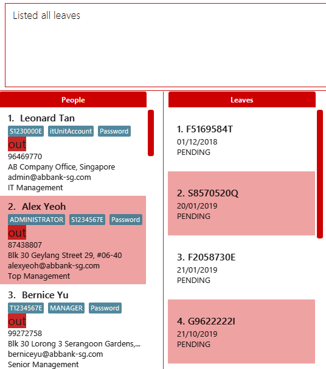
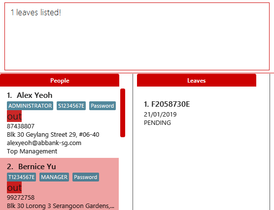
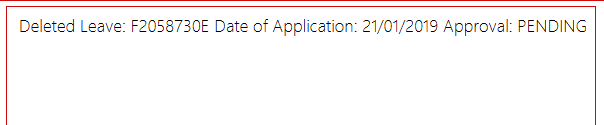
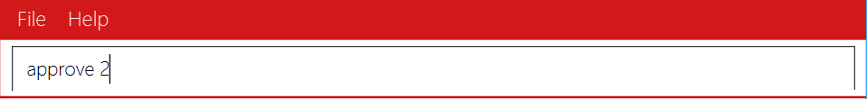
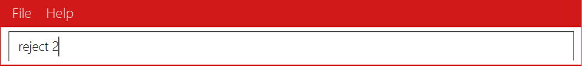

Overview
Bank Address Book (BankAB) is a business process management and workflow application platform, whereby its users are all the employees in a banking environment. This platform supports the basic daily routine of each employee such as:
-
Checking working schedule
-
Applying for leave application
-
Checking in and out during working hours
The managers and administrators will have higher priority access level of BankAB such as changing the priority level of the employee and approve or reject leave requests.
Summary of contributions
-
Major enhancement : added leave application function for employees.
-
What it does: Allows the user to request leave application. This leave application is subjected for approval from their boss. Only a higher level priority user can approve/ reject or delete a low priority user’s leave application. Also, it allows the user to filter or list all existing leave applications in the system.
-
Justification: This feature is a core component to the product as it gives users the capability to request/ approve/ reject/ delete leave application in the system easily.
-
Highlights: The implementation requires new classes and commands to be created and also affects current existing
deleteandsetplvlcommands. The implementation was challenging due to the different privileges each priority level have which affects commands such asapprove,rejectanddeleteleave.
-
-
Minor enhancement: UI changes such as color theme changes, removal of browser panel, addition of leave application tab and image view.
-
Code contributed: RepoSense Dashboard
-
Other contributions:
-
Project management:
-
Managed vetting through and approving individual pull requests
-
-
Enhancements to existing features:
-
Updated the GUI color scheme, removal of browser panel, added leave application tab and image view : #25, #108
-
Added functionality for
deletecommand that simultaneously deletes leave applications under the person that is being deleted : #25 -
Made modifications to the existing implementation after the feedback received from the first practical exam: #132
-
-
Documentation:
-
Community:
-
Contributions to the User Guide
Given below are sections I contributed to the User Guide. They showcase my ability to write documentation targeting end-users. |
Leave Application
Leave application : leave
Request leave application of the user for approval.
Format: leave date/DATE
|
Example: leave date/20/11/2019

Requested leave application on 20/11/2019.

List leave application : listleave
|
List out all leave application in the leave list.
Format: listleave

Returns all the leave application in the system.

Filter leave application : filterleave
|
Filter leave applications based on NRIC.
Format: filterleave NRIC
Alias: fl
|
Example:
filterleave F2058730E

List all leave application requested by the user with NRIC, 'F2058730E'.

Delete leave application : deleteleave
Delete the specified leave from leave list.
|
Format: deleteleave INDEX
Alias: dl
Example:
deleteleave 1


Deletes the leave application with INDEX 1 in the leave list.

Approve leave application : approve
Approve the specified leave application from leave list.
|
Format: approve INDEX
Example:
approve 2

Approve the leave application with INDEX 2 in the leave list.

Reject leave application : reject
Reject the specified leave application from leave list.
|
Format: reject INDEX
Example:
reject 2

Reject the leave application with INDEX 2 in the leave list.

Contributions to the Developer Guide
Given below are sections I contributed to the Developer Guide. They showcase my ability to write technical documentation and the technical depth of my contributions to the project. |
Add Leave command
The leave is a command that allows the user to request leave applications. This command is only available after the user has logged in successfully.
The format of the command is: leave date/DATE
It takes in the parameter DATE in a valid format (DD/MM/YYYY).
Implementation
The implementation is divided in two phases.
In the first phase, parsing of the input arguments is handled by AddLeaveParser, which will create a new object AddLeaveCommand.
AddLeaveParser which implements Parser interface, parses the inputted arguments from the CLI and also checks if it conforms the expected input format.
Code snippet from AddLeaveParser that shows the above:
public AddLeaveCommand parse(String args) throws ParseException {
ArgumentMultimap argMultimap =
ArgumentTokenizer.tokenize(args, PREFIX_NRIC, PREFIX_DATE);
String employeeNric = "S1234591A";
if (!arePrefixesPresent(argMultimap, PREFIX_DATE)
|| !argMultimap.getPreamble().isEmpty()) {
throw new ParseException(String.format(MESSAGE_INVALID_COMMAND_FORMAT, AddLeaveCommand.MESSAGE_USAGE));
}
if (SessionManager.isLoggedIn()) {
employeeNric = SessionManager.getLoggedInEmployeeNric();
}
EmployeeId employeeId = ParserUtil.parseEmployeeId(employeeNric);
Date date = ParserUtil.parseDate(argMultimap.getValue(PREFIX_DATE).get());
Approval status = ParserUtil.parseApproval("PENDING");
Leave leave = new Leave (employeeId, date, status);
return new AddLeaveCommand(leave);
}In the second phase, AddLeaveCommand is being executed. The AddLeaveCommand
adds a Leave to the LeaveList.
If the leave being added already exists in the LeaveList or when user is not logged in, executing the leave
command raises a DuplicateLeaveException or UserNotLoggedInException:
public CommandResult execute(Model model, CommandHistory history) throws CommandException {
if (isLogin && !SessionManager.isLoggedIn()) {
throw new CommandException(STATUS_NOT_LOGGED_IN);
} else if (model.hasLeave(toAdd)) {
throw new CommandException(MESSAGE_DUPLICATE_LEAVE);
} else {
model.addLeave(toAdd);
model.commitLeaveList();
return new CommandResult(String.format(MESSAGE_SUCCESS, toAdd));
}
}The result of AddLeaveCommand execution is encapsulated as a CommandResult object which is passed back to the UI
and display the added leave application in the leave list.
The sequence diagram below demonstrates the interaction within the Logic component of AddLeaveCommand:

Design Considerations
Aspect: Storage for leave
-
Alternative 1 (current choice): Store in a different XML file.
-
Pros: Easy to implement by duplicating existing storage, parser and XML related classes to cater for new XML file.
-
Cons: Need to spend extra time on deleting of leaves when a particular person is deleted.
-
-
Alternative 2: Store in a existing XML file.
-
Pros: Easier to implement, as it only requires to add onto existing parser.
-
Cons: May require extra parameters to create a Person object.
-
-
Alternative 3: Store in a different file format.
-
Pros: Easier to understand.
-
Cons: Consumes extra time to implement different parser from scratch.
-